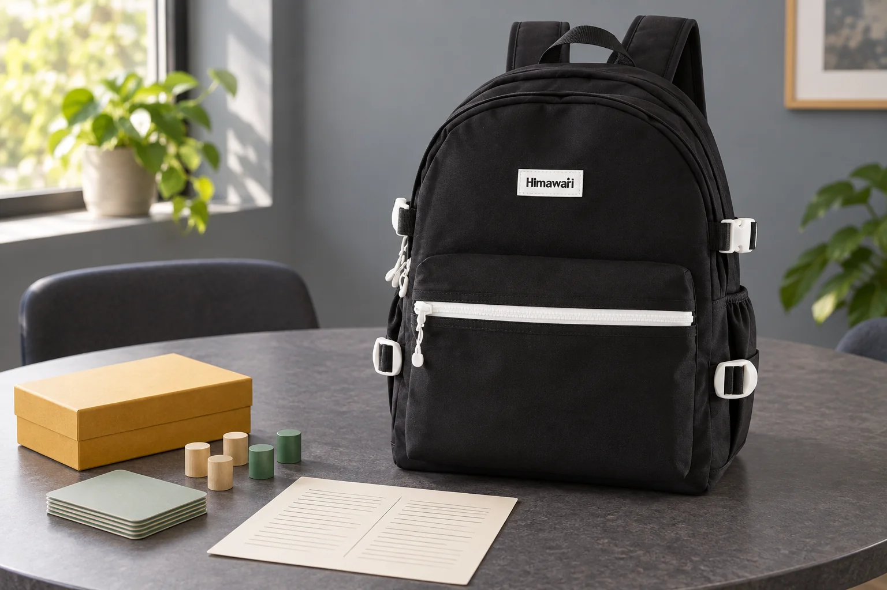

백팩 자체 무게와 하루 짐 무게를 나누어 비교하기

백팩 설명에서 가볍다는 말을 보면 하루 동안 들 짐도 줄어들 것처럼 느낄 수 있습니다. 실제로 운반하는 것은 가방과 안에 담은 물건을 합친 무게입니다. 후보의 자체 무게를 읽고 평소 소지품을 따로 보면 어느 쪽을 바꿀 수 있는지 알기 쉽습니다. 제품의 무게 숫자와 메었을 때의 느낌도 같은 자료로 취급하지 않고 각각 비교해봅니다.
지금 쓰는 가방의 내용물을 모두 꺼내놓으면 늘 들어 있던 예비품을 발견할 수 있습니다. 다음날도 필요한 물건과 오늘만 썼던 물건을 나눕니다. 가방을 바꾸지 않아도 짐의 구성이 바뀌면 총무게는 달라집니다. 반대로 반드시 들고 다닐 기기와 자료가 있다면 그 조건을 고정하고 후보 가방의 자체 무게 차이를 볼 수 있습니다.
자체 무게의 측정 범위를 먼저 읽기
제품에 적힌 중량이 가방만의 값인지 포함된 부속품을 합친 값인지 확인합니다. 세트 구성이나 크기 옵션이 다르면 같은 모델명으로도 비교할 범위가 달라질 수 있습니다. 측정 설명이 있으면 그 기준을 함께 기록합니다. 수치가 가까운 후보를 놓고 차이를 판단할 때 특히 필요한 정보입니다. 알려지지 않은 포함 범위는 판매처에 물어볼 항목으로 남깁니다.
Himawari No.9290 제품 정보의 현재 사양에는 가방 무게가 950g으로 안내되어 있습니다. 외부 크기는 가로 30 × 세로 42 × 폭 18cm이며 카탈로그의 9290 기준을 사용합니다. 이 무게는 가방 안에 자신의 책과 기기를 넣은 총중량이 아닙니다. 같은 검정 원본의 모습과 사양을 연결해 읽습니다.

숫자 비교는 차이를 계산한 뒤 해석하면 됩니다. 예를 들어 가방이 950g이고 내용물이 3,200g이라면 합계는 4,150g입니다. 이는 계산 방법을 보여 주는 가정이며 특정 사용자의 짐이나 권장 무게를 뜻하지 않습니다. 같은 내용물에서 가방을 200g 가벼운 것으로 바꾸면 총합도 200g 줄어듭니다. 그 차이가 자신에게 어떤 의미인지는 실제 착용 조건과 함께 판단할 부분입니다.
총무게에서 매일 같은 부분 찾기
기기와 충전기, 책 한 권처럼 매일 가져가는 물건은 목록과 실제 무게를 함께 남길 수 있습니다. 무게를 직접 잰다면 빈 가방과 내용물을 다른 순서로 올리지 않고 같은 저울과 같은 조건에서 비교합니다. 케이스를 쓰는 기기는 케이스도 운반할 물건에 포함합니다. 물건 이름만 적은 목록보다 실제로 들고 나갈 상태가 비교의 기준에 가깝습니다.
물병처럼 내용물의 양에 따라 달라지는 물건도 있습니다. 빈 병을 넣은 날의 총합과 물을 채운 날을 같은 조건으로 비교하지 않습니다. 어느 상태를 기준으로 보았는지 짧게 기록하면 됩니다. 무게를 줄이기 위해 필요한 물을 임의로 빼는 식의 결론을 먼저 내리지 않고, 그날 쓸 물건과 가져갈 수량을 실제 일정에서 정합니다.
같은 물건을 두 개씩 가지고 있었는지도 볼 수 있습니다. 집과 사무실에서 나누어 쓸 수 있는 도구를 매번 모두 운반하는지, 예비품을 쓰지 않는 날에도 계속 넣어두는지 생각합니다. 필요한 예비품은 남길 수 있습니다. 다만 역할이 겹치는 물건이 있다면 가방의 자체 무게를 몇십 그램 줄이는 선택과 짐 한 묶음을 바꾸는 선택을 나란히 검토할 수 있습니다.
같은 총무게라도 가방 안의 자리가 다르다
총합이 같아도 물건이 한쪽에 몰렸는지, 단단한 물건이 등에 가까운 면을 누르는지에 따라 느껴지는 상태는 달라질 수 있습니다. 무게를 잰 다음에는 실제 짐을 넣고 제품 안내에 맞게 메어봅니다. 양쪽 끈의 놓임과 가방을 내리는 동작을 함께 봅니다. 숫자가 같다는 이유로 착용 결과까지 같은 것으로 정하지 않습니다.
현재 가방에서 내용물을 옮겨 비교할 수 있다면 짐을 그대로 유지합니다. 후보를 더 가볍게 느끼고 싶어 책을 빼면 가방 자체의 차이와 내용물 차이가 섞입니다. 크기가 다른 가방은 같은 물건을 놓는 방식도 달라질 수 있으므로 그 변화까지 기록하면 좋습니다. 어느 제품이 더 가볍다는 한 문장보다 같은 짐을 담았을 때 무엇이 달랐는지가 다음 선택에 도움이 됩니다.
빈 가방의 무게가 조금 더 나가더라도 자신이 필요한 구조를 쓰기 편할 수 있습니다. 반대로 자주 쓰지 않는 구성 때문에 무게가 늘었다고 느끼면 더 단순한 후보를 살펴볼 수 있습니다. 하루의 사용에서 필요한 구조와 중량 차이를 함께 판단합니다. 추가 파우치가 필요한 후보라면 그 파우치를 포함한 실제 구성을 비교할 이유도 있습니다.
표에 남길 숫자와 사용 메모
후보를 기록할 때에는 모델·옵션, 안내된 자체 무게, 가져갈 짐의 구성과 측정 조건을 나란히 적어봅니다. 여기에 직접 확인한 착용 느낌이나 아직 문의할 조건을 짧게 붙입니다. 판매자가 제시한 수치와 자신이 재어본 결과를 같은 칸에 덮어쓰지 않으면 나중에 차이가 생겼을 때 기준을 찾기 쉽습니다. 측정 방식이 다르면 그 사실을 함께 남길 수 있습니다.
하루 짐이 날마다 크게 달라진다면 가장 적은 날과 가장 많은 날의 구성을 나누어봅니다. 늘 최대 짐을 넣는다는 전제로 가방을 고를 필요는 없지만 그날 사용할 운반 방법은 있어야 합니다. 매일 쓰는 가방 하나와 특별한 날의 별도 가방을 생각할 수도 있습니다. 제품 무게의 차이가 두 일정에서 각각 어떤 비중인지 비교하면 선택 이유가 구체적입니다.
다음 출발 때에는 무게 기록을 맞추려고 필요 없는 물건을 그대로 넣지 않습니다. 그날 실제로 쓸 짐을 고르고 가방을 닫은 상태에서 들고 메는 동작을 확인합니다. 기기나 책이 바뀌면 내용물 기록도 새로 봅니다. 자체 무게는 후보를 비교할 숫자로 남기고 실제 운반 구성은 일정에 맞게 조정하면 두 정보를 계속 연결해 사용할 수 있습니다.